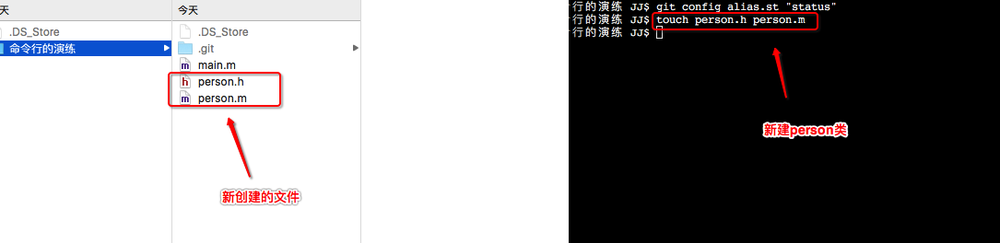
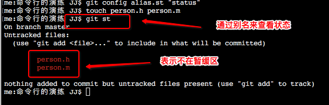
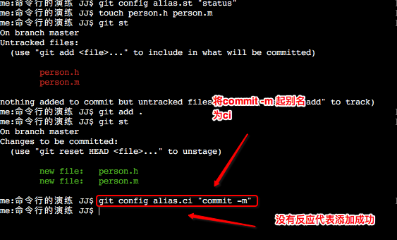
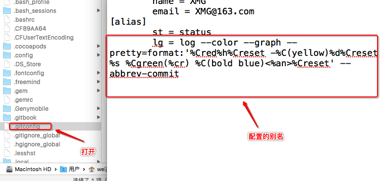
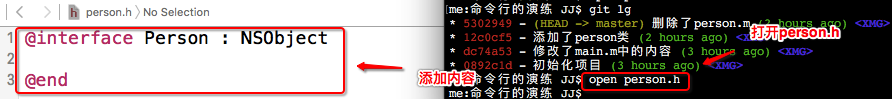
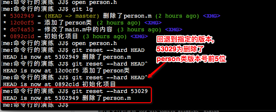
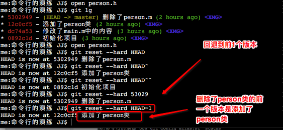

命令行->本地操作GIT命令
一.给命令起别名
1."给status"起别名为"st" git config alias.st "status"
2.来到.git->.config查看起的别名
3.创建person类 touch person.h person.m
4.通过刚起的别名"git st"来查看文件状态 git st
5.将person类添加到暂缓区 git add .:.相当于*,将工作目录下所有没有被添加到暂缓区的文件添加到暂缓区
6.查看添加后的状态 git st
7.给"commit -m"起别名为"ci" git config alias.ci "commit -m"
8.来到.git->.config查看起的别名
9.通过刚起的别名"git ci"将暂缓区的person类提交到本地代码仓库 git ci "添加了person类":后面不跟文件名,则会将暂缓区内所有的内容提交到本地代码仓库
10.配置全局的别名 git config --global alias.st "status"
11.查看全局的别名(前往->个人->.gitconfig)
二.git删除文件
1.将person.m删除 git rm person.m
2.查看文件状态(在暂存区里面) git st
3.将删除操作提交到本地代码仓库 git ci "删除了person.m"
4.查看文件状态 git st (暂缓区没有任何内容需要提交)
三.查看版本号
1.第一种查看版本号方式,仅能查看当前版本以及以上的版本 git log
2.第二种查看版本号方式,可以查看所有的修改记录(版本绘图) git reflog3.给查看版本起全局别名 git config --global alias.lg "log --color --graph --pretty=format:'%Cred%h%Creset -%C(yellow)%d%Creset %s %Cgreen(%cr) %C(bold blue)<%an>%Creset' --abbrev-commit"
4.查看起的别名(前往->个人->.gitconfig)
5.使用别名查看log信息
- 四.版本回退
1.打开person.h,添加代码 open person.h2.在没有提交的情况下进行版本回退 git reset --hard HEAD:强制回退到当前版本,还未提交的一个版本
3.回退到上一个版本 git reset --hard HEAD^
4.回退到上上个版本 git reset --hard HEAD^^
5.回退到指定回退到某个版本 git reset --hard 版本号(至少前5位)
6.回退到前几个版本 git reset --hard~1 - 五.使用reflog查看日志
git reflog
- 六.总结
1.起别名:当前版本库别名,与全局别名(只需要起一次,下次创建仓库后就不用起别名了) 2.删除文件:git rm 文件名,删除后保存在暂缓区,需要提交到代码仓库 3.查看版本号 git log:查看当期与当前以上的操作 git reflog:查看版本包含回退的操作 4.版本回退:回退到之前提交过的版本